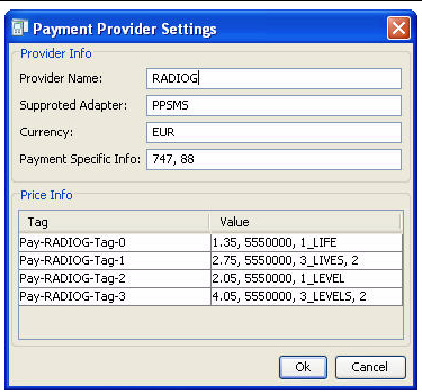
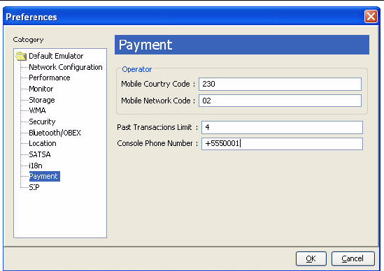
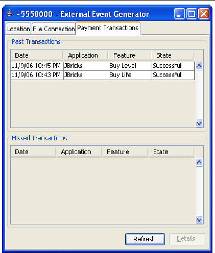
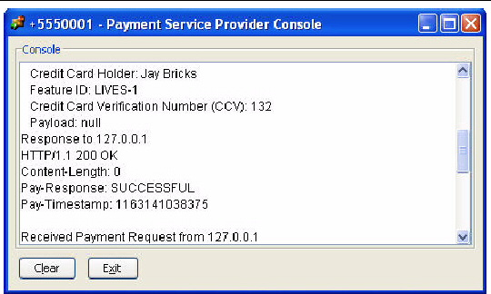

| Sun Java Wireless Toolkit for CLDC User's Guide |
| Sun Java Wireless Toolkit for CLDC User's Guide |
| C H A P T E R 16 |
|
Working with the Payment API |
JSR 229, the Payment API, enables applications to make payments on behalf of their users. The Payment API supports different payment mechanisms through payment adapters. A device that implements the Payment API has one or more adapters. MIDlet suites use descriptor attributes to specify what types of payment adapters they can use.
The Sun JavaTM Wireless Toolkit for CLDC's emulator implements the Payment API with an example payment adapter that simulates both Premium Priced SMS (PPSMS) and credit card payments. In addition, the toolkit makes it easy to set the necessary attributes in the MIDlet's descriptor and JAR file manifest. Finally, a payment console enables you to easily track payments made or attempted by an application.
Because the Payment API is closely tied to provisioning and external device payment mechanisms, and because payments can only succeed in a trusted protection domain, always test and debug your Payment API applications using the toolkit's Run via OTA mechanism. See Chapter 2 for details.
To adjust the payment attributes for a project, click Settings and select the Payment icon.

The fields and values are explained fully in JSR 229, the Payment API specification.
The General box contains information about the Payment API version in use and where to find payment updates. For testing, you can specify a localhost URL (as shown in the screen shot) that retrieves an update file directly from your project directory.
The Debug box contains options that are useful during application testing. Each option is explained in the Payment API specification.
The Features box lists the features your application can charge. These features correspond to the pricing information that is listed for each provider. You can modify the list of features by using the Add and Remove buttons.
The Providers box lists specific payment providers that can be used for this application. When the time comes to make a payment, the emulator (or device) matches one of its available payment adapters to one of the providers listed for the application. You can modify the list of providers with the Add, Edit, and Remove buttons. If you add or edit a provider, the following window appears.
FIGURE 16-2 Editing a Payment Provider

These fields are also described fully in the Payment API specification.
The Price Info box contains one line for each defined payment feature. To edit a value for a price tag, double click the corresponding cell in the Value column.
Payment attributes are stored in a payment update file with a .jpp extension. Read the specification for full details. The Sun JavaTM Wireless Toolkit for CLDC provides a utility that makes it easy to edit the payment update file independently of the project settings.
To run the utility, choose File > Utilities, select Payment Edit Dialog, and press Launch. You are prompted to select the payment update file you wish to edit. After you choose a file, a window that looks nearly identical to the Payment section of the project settings appears. The debug settings are not included in the payment edit utility.
Edit the payment update settings and press OK when you're finished. Because payment update files are cryptographically signed, the toolkit shows you a list of keys that you can use to sign the file. Select the key you wish to use and press Sign Payment Update File.
To adjust the Payment API settings for the toolkit, chooseEdit > Preferences and click Payment.
FIGURE 16-3 Setting Payment Preferences

The Mobile Country Code (MCC) and Mobile Network Code (MNC) are used in conjunction with PPSMS payment providers. Taken together, the MCC and MNC identify the wireless carrier of a device. At payment time, the MCC and MNC are used to find a matching provider from the list of providers in the project settings. Because the emulator is not a real device, you can simulate a carrier by filling in appropriate values for MCC and MNC. Consult the Payment API specification for more details.
Past Transactions Limit determines how many previous transactions are recorded in the emulator. This affects the length of the list shown in the external event window, described below, as well as the number of past transactions that can be retrieved by the application itself.
Finally, Console Phone Number determines the simulated phone number of the payment console, which is described later.
The emulator keeps track of payment transactions, just as a real device does. To see the history of transactions, choose MIDlet > External Events from the emulator window's menu. Click the Payment Transactions tab.
FIGURE 16-4 Viewing Payment Transactions

Click Refresh to update the list after making more payments. Select a transaction and click Details to see all the details in a separate window.
The external events window only shows transactions that have been made while the emulator is running via OTA. Although it is possible to complete transactions without using OTA, such transactions are not shown. For the most realistic simulation of payments, always use Run via OTA to test applications.
The Sun JavaTM Wireless Toolkit for CLDC provides a payment console that makes it easy to see payments passing through the example payment adapter. To launch the Payment Service Provider Console, select File > Utilities > Payment Console.

In addition, you can view transactions using the network monitor. Credit card transactions are conducted using HTTPS, while PPSMS transactions use SMS. For a full description of the network monitor, see Chapter 5.
| Sun Java Wireless Toolkit for CLDC User's Guide |
Copyright © 2007, Sun Microsystems, Inc. All Rights Reserved.